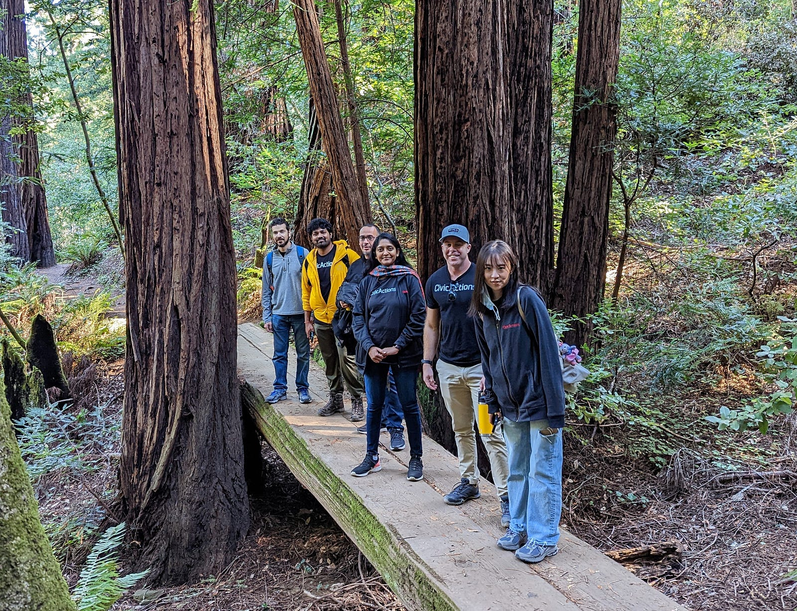
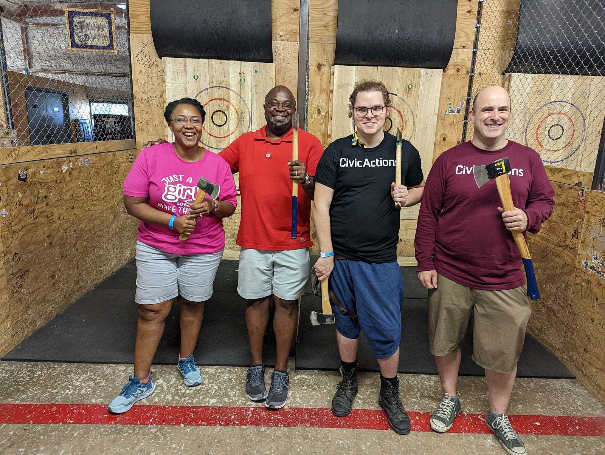
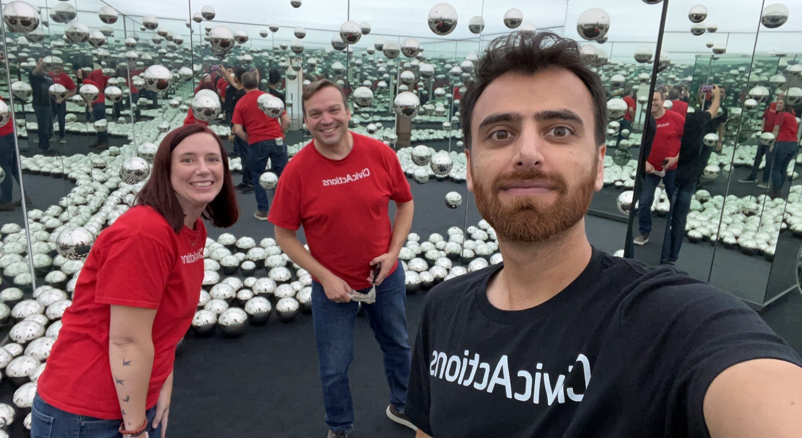
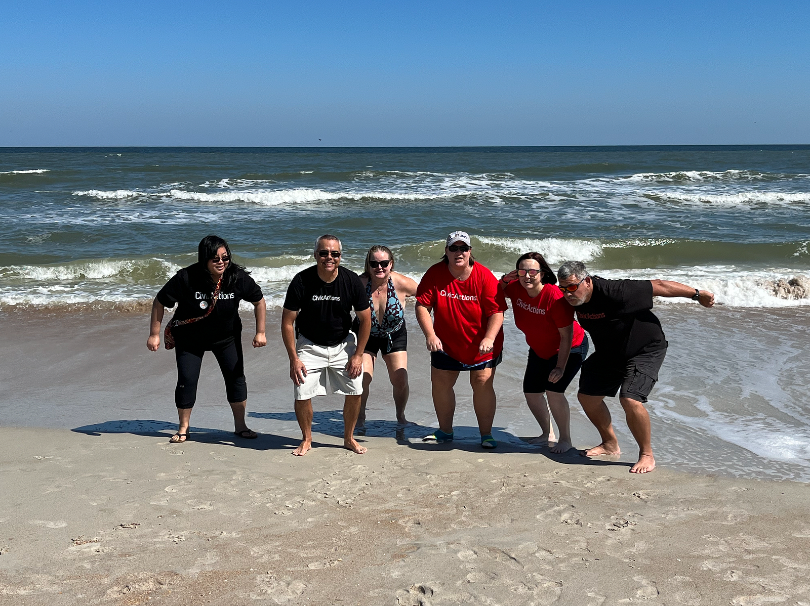
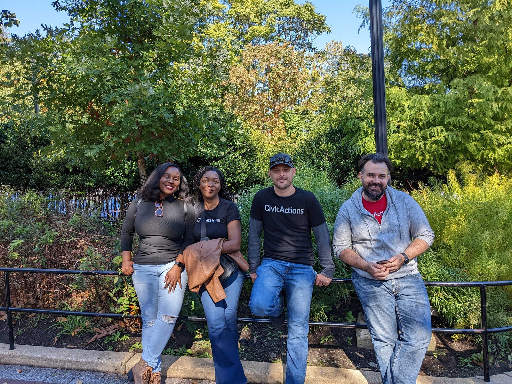

As a fully distributed company, CivicActions has used all-team, annual in-person summits as a way to more deeply connect with colleagues who are used to connecting virtually over Zoom. Prior to the pandemic, our annual summits were held in locations like Boulder and Portland, where CivicActioners were able to bond, strategize, and have thought-provoking discussions about work, life, and everything in-between.

Changing it Up
In 2022, with concerns about Covid-transmission still prevalent — and with sustainability front of mind — we decided to try a more hybrid approach to innovate the traditional summit. With team members across the US and Canada, we organized 10 regional summits called Field Days in Austin, Chicago, New England, Toronto, Washington, D.C., the Pacific Northwest, Florida, Denver, New Jersey, and San Francisco, along with a fully virtual Field Day for those who preferred not to travel.

Keeping it Local
CivicActioners gathered in regional hubs for a variety of fun, team-building activities that brought local colleagues closer together. From a hike amongst the redwood trees in the San Francisco Bay Area to a stroll along the boardwalk and arcade games in Asbury Park, NJ, regional teams self-organized local activities that engaged everyone.

Other hits included a spooky tour of Salem, MA (followed by a jam session), a very Ferris Bueller’s Day Off inspired trip to the Art Institute of Chicago, and a beach day picnic followed by a dip into the ocean in Florida. By reimagining the all-team summit through a hyper-local lens, team members were able to meet in small groups and get to know fellow CivicActioners across departments and projects.
“I joined CivicActions at the beginning of the pandemic,” said Rachael Adams, Resource Planning Analyst, who planned and attended the Field Day in Chicago. “Having worked here for over two and a half years without meeting my colleagues, it was great to be in the same room with so many of them. While we chit chat over Zoom, it was wonderful to be in each others’ company for hours at a time just hanging out and laughing. I feel more connected with every person I met.”

Safety and Sustainability
This approach allowed for better Covid precautions, which included testing before the Field Days and optional masking based on community transmission level. Regional Field Days were also more environmentally sustainable. Instead of having the majority of the company fly to a single location, team members were able to take public transportation when possible to their destinations. CivicActioners were encouraged to make other sustainable choices including eating local and vegan/vegetarian foods, using reusable water bottles, and opting to walk to activities during the course of the Field Day.

Going Hybrid
A key to the success of this kind of hybrid summit is including an opportunity for the full, distributed team to gather together to not only unpack our in-person experiences, but to also do deeper work pertaining to our company culture and values. While the Field Days were entirely social, we will also have a Virtual All-Team Summit later this month so team members can do the deep thought-work which would have been explored during an in-person, all-team company retreat in years past. This work includes DEIA sessions, break out sessions, and a coin ceremony where participants can share appreciations for their colleagues.
Looking to the Future (of Work)
The future of work is changing and CivicActions has long been ahead of the curve in terms of embracing fully-remote work. As we forge ahead, CivicActions is not afraid to experiment when it comes to exploring new and hybrid ways to bring the company together so that these gatherings are not only productive, but also sustainable, safe, and ultimately meaningful to those who participated.